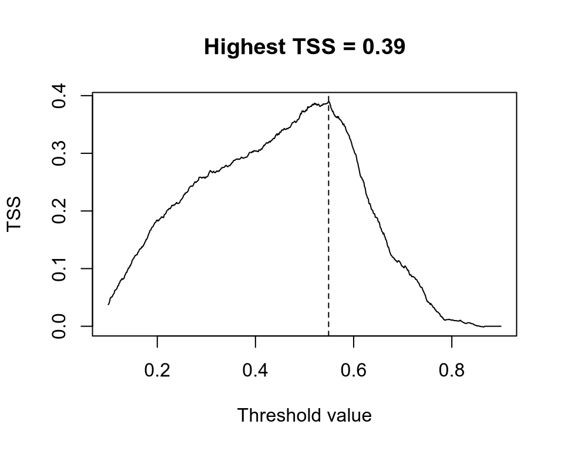

The column names wc2.1_10m_bio_<id> means that this is data from WorldClim (wc) at a resolution of 10 arc-minutes (10m) for bioclimatic variables (<id>). Bioclimatic variables are generally highly correlated with each others and only a subset of them should be used for train an ecological niche model. Variable selection can be performed with the usual statistical tricks or, even better, can be informed by the biology of the species. Because I do not know the biology of the species, I build several competing ENMs and test which one is best using the Akaike information criterion (AIC).
The first model considers only average temperature (BIO01) and total precipitation (BIO12) to train an ENM using glm().
Code
enm_01_12 <-glm( occ ~poly(wc2.1_10m_bio_1, 2, raw =TRUE) +poly(wc2.1_10m_bio_12, 2, raw =TRUE),data = d,family ="binomial")
We can test how well these variables explain the distribution of the species by building another ENM with different variables and comparing it with the model above. For example, we can use the minimum temperature of the coldest month (BIO06) and the precipitation of the driest month (BIO14) instead.
Code
enm_06_14 <-glm( occ ~poly(wc2.1_10m_bio_6, 2, raw =TRUE) +poly(wc2.1_10m_bio_14, 2, raw =TRUE),data = d,family ="binomial")
We can compared the two models by AIC, with the best most having the lowest AIC.
Code
AIC(enm_01_12, enm_06_14)
df AIC
enm_01_12 5 4289.915
enm_06_14 5 4030.867
The model with the second set of variables explain the distribution of the species better than the first model.
Statistical dredging (optional and dangerous)
There are packages to run each possible model starting from a full model and rank them according to AIC. The most popular package is MuMIn, which contains the function dredge() to perform this steps. Start with the full model, i.e. the most complex model, and pass this to dredge().
Code
# full modelfull_enm <-glm( occ ~poly(wc2.1_10m_bio_1, 2, raw =TRUE) +poly(wc2.1_10m_bio_12, 2, raw =TRUE) +poly(wc2.1_10m_bio_13, 2, raw =TRUE) +poly(wc2.1_10m_bio_14, 2, raw =TRUE) +poly(wc2.1_10m_bio_15, 2, raw =TRUE) +poly(wc2.1_10m_bio_5, 2, raw =TRUE) +poly(wc2.1_10m_bio_6, 2, raw =TRUE),data = d,family ="binomial")# dredgingoptions(na.action ="na.fail") # required by MuMIn, don't think about itdr <- MuMIn::dredge(full_enm)head(dr)
This table contains all possible sub-models of full_enm (including also full_enm) as rows ranked by AICc. A model contains the variable if there is a + at that column. The column weight quantifies the support of that model. We see that the model in first row (lowest AICc) is strongly supported against all others and we can select only that as our ENM. This model is actually the full model as it contains all bioclimatic variables specified.
Species distribution
When using glm(), terra makes it extremely easy to produce a SDM. We first need to load the raster layers of the bioclimatic variables.
Code
library(terra)ff <-list.files("../data", pattern =".tif") # all files with .tif extensionr <-rast(file.path("..", "data", ff))roi <-ext(-13, 33, 33, 62) # roi of Europer <-crop(r, roi) # crop to Europe
The terra function predict(<raster>, model) is all we need.
Code
sdm <-predict(r, full_enm, type ="response")plot(sdm, col =hcl.colors(100, "Spectral", rev =TRUE))
Binary projections
And we obtained the projected suitability of the species for Europe. Note that this is a continuous value, in this case representing the probability of detecting the species given climate. If we are interested in a binary map, e.g. showing the climatic range of the species, we need to binarize this continuous value into 0/1. There are several approaches to achieve this, but here we consider only the approach using the true skill statistics (TSS), which is one of the most widely used.
The main idea of the TSS approach is to pick a threshold value and set the cells of the map above to 0 if their values if less than this threshold and to 1 otherwise. These 0/1 values are then compared to the known occurrence of the species to calculate
The number of occurrences correctly predicted as presences (true positives, TP).
The number of occurrences incorrectly predicted as absences (false negatives, FN).
The number of occurrences correctly as absences (true negatives, TN).
The number of occurrences incorrectly presences (false positives, FP).
TSS is defined as \(TSS = \frac{TP\,TN - FP\,FN}{(TP+FN)(TN+FP)}\), which is a statistic balancing how well the model performs in predicting both presences and absences. TSS ranges from 0, for a model not better than random, to 1, for a model with perfect predictions.
If we pick several threshold and calculate the TSS for each of them, the best threshold is the one that has highest TSS, which is also the TSS of our model predictions.
Code
# extract the values from the continuous mapsuit <-extract(sdm, d[, c("x", "y")], ID =FALSE)[, 1]# generate a gradient of threshold valuesthreshold <-seq(0.1, 0.9, by =0.001)tss <-rep(NA, length(threshold)) # empty vector for storage# iterate over threshold valuesfor (i inseq_along(threshold)) { p <-ifelse(suit > threshold[i], 1, 0) TP <-sum(p ==1& d$occ ==1) FP <-sum(p ==1& d$occ ==0) FN <-sum(p ==0& d$occ ==1) TN <-sum(p ==0& d$occ ==0) sens <- TP / (TP + FN) spec <- TN / (TN + FP) tss[i] <- sens + spec -1}th <- threshold[which.max(tss)] # best thresholdplot( threshold, tss,type ="l", main =paste0("Highest TSS = ", round(max(tss), 2)),xlab ="Threshold value", ylab ="TSS")abline(v = th, lty =2)# binarize the continuous mapsdm_bin <-ifel(sdm >= th, 1, 0)plot(sdm_bin, col =c("grey90", "dodgerblue"))

This binary map is quite incorrect for this species. According to the IUCN (https://www.iucnredlist.org/species/61550/12514105), this species is found also in most of Italy, all the Balkans, and part of Turkey, but is not found in the UK, the Low Countries, and most of Germany. Why do we get such bad projections compared to the known range from IUCN? We will answer this in a next lecture, but my general recommendation is to plot the detection points.